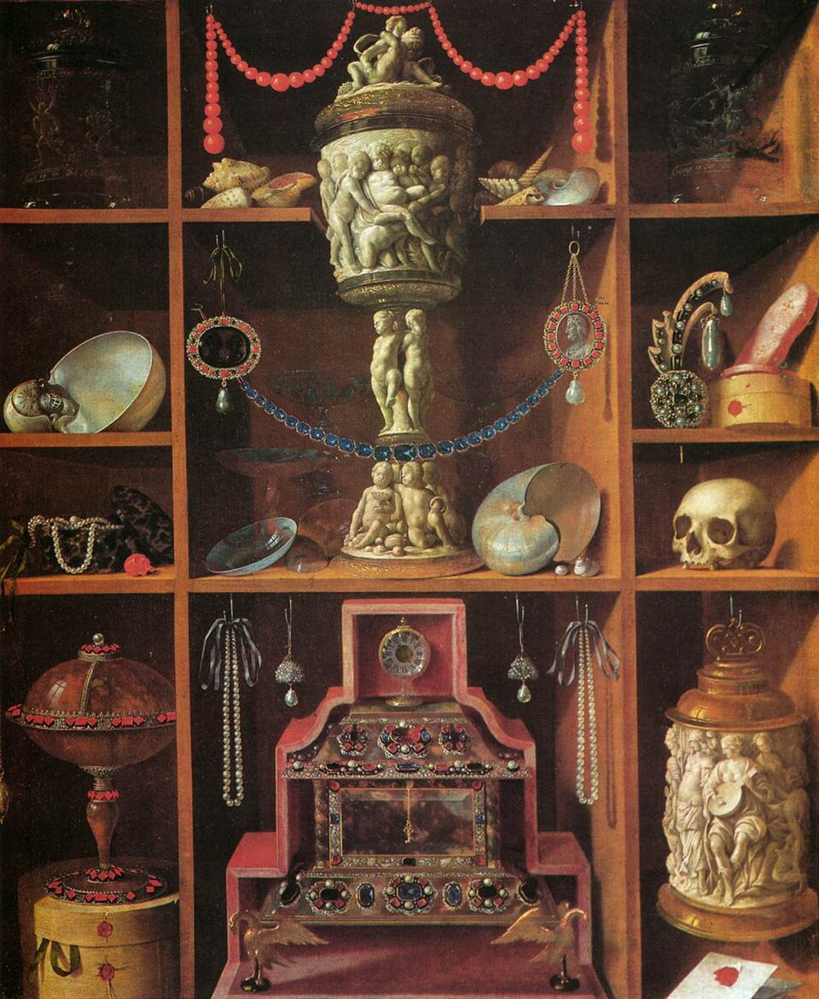

Sistema operativo
Lo que no cambia cada día. Por dónde empieza una IA, el perfil del director, el índice, una ficha por figura y los protocolos que valen para todas.

Exposición · 2026
Nueve oficios en Grok Bot. Un archivo en Notion. Adrián Valencia Ríos conserva el cierre.
Legado VARIX es el sistema de Adrián Valencia Ríos: un gabinete de agentes en Grok Bot y un archivo en Notion. No es un producto, ni un curso, ni una consultoría. Es un prototipo personal, en uso. La candidatura es el primer trabajo real. El sistema no se reduce a ella.
La cadena es fija. El director está por encima. Si no se nombra un oficio, responde Jefe. Las demás figuras entran solo cuando el encargo es suyo. Antes de repartir se fija el esfuerzo y quién sintetiza. Por defecto cierra Jefe. Despertar a varias a la vez es la excepción: él reparte y luego reúne.
Orquesta, prioriza y cierra.
Arquitectura de agentes y de sistemas de IA.
Derecho del Trabajo y Seguridad Social.
Derecho administrativo, separado a propósito del laboral.
Organización del trabajo, tiempos y procesos.
Datos y mercado laboral. Solo lo que se puede afirmar.
Nichos y oportunidades, leídos como dossier.
Voz pública. Texto, LinkedIn y crisis, sin inflar el cargo.
Inglés, con un estándar concreto.
El prompt de una figura vive una sola vez, en el cuerpo de su ficha. El manifiesto es un índice: señala, no copia. Hay nombres que el canon ya retiró. No se reactivan.
Lo que no cambia cada día. Por dónde empieza una IA, el perfil del director, el índice, una ficha por figura y los protocolos que valen para todas.
Lo que sí cambia. Proyectos, sesiones, decisiones, activos, glosario, recursos y pendientes. Una sesión no copia la conversación entera: deja el hecho y lo decidido.
Cómo no se duplica. Una fuente de verdad por cosa. Cada cambio relevante queda en un registro. El archivo anterior se lee. No se vuelve a escribir.
El orden de lectura no se salta: arranque, perfil, índice, cuerpo de la figura, protocolos y, al final, la bitácora. La siguiente vez, cualquier agente entra por ahí y no contradice lo ya cerrado.
Una skill es un proceso con nombre. Unas abren una figura. Las otras son el método del gabinete: un brief antes de delegar, la forma de orquestar, la regla de esfuerzo y de handoff, y cómo se reescribe un prompt sin degradar el archivo.
Un agente nuevo hereda ese método. No empieza de cero, y el archivo de skills se escribe en los dos sitios a la vez, para que las versiones no se separen.
Se nombra el objetivo, el formato y el límite. Sin eso, no se delega.
Entra la figura que corresponde. Si hace falta más de una, Jefe reparte y luego reúne.
Lo que se decide queda fechado: una sesión, una decisión o un activo. No se queda en el chat.
La siguiente vez se lee el archivo en el mismo orden. Lo cerrado no se reabre por costumbre.
Hay rutinas que siguen cuando nadie está delante. El archivo trabaja aunque la conversación haya terminado. La persona conserva el cierre: la IA propone, no impone, y una instrucción explícita anula el protocolo.
Sala · Visible
Muestro una exposición del gabinete, no el ecosistema con el que trabajo. La web recoge la forma. El sistema real es más grande, está en uso y no se publica.